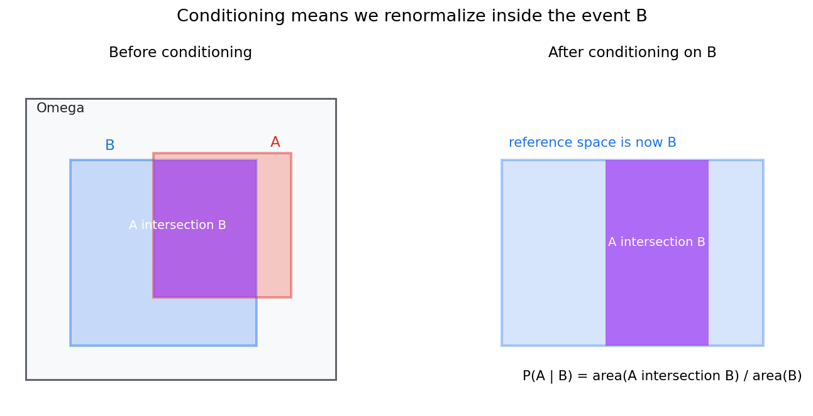
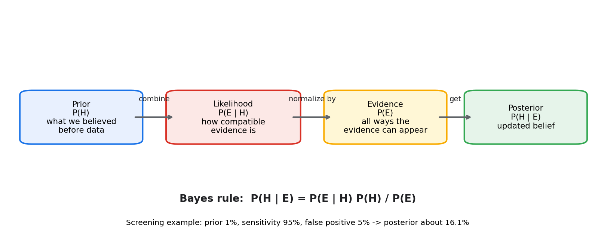
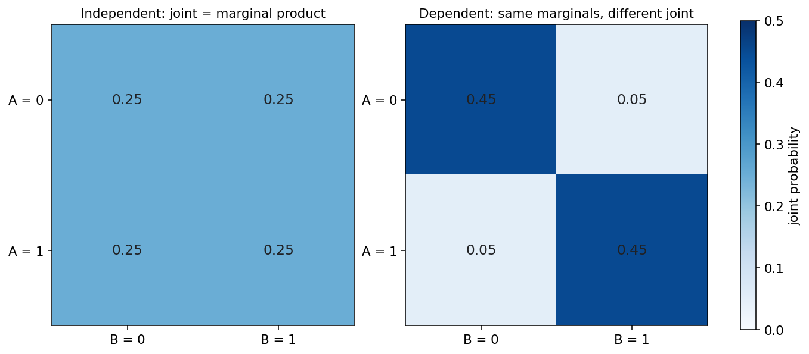
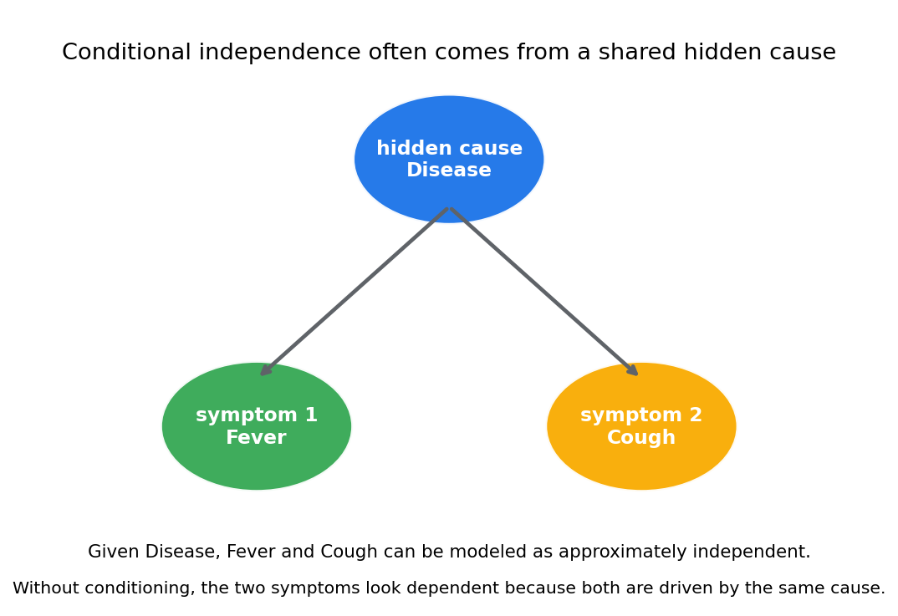

概率论第二章教程: 条件概率, 独立性与贝叶斯公式
第一章解决的是"有哪些可能, 哪些情况算作事件, 概率如何赋值".
这一章要更进一步, 回答三个更尖锐的问题:1. 当额外信息出现以后, 概率应该怎样更新?
2. 两个事件之间到底有没有关系, 怎样判断?
3. 如果我们看到的是结果, 能不能反过来推最可能的原因?这三件事合在一起, 就是条件概率, 独立性与贝叶斯公式的核心.
0. 先看全章主线
第二章的主线可以压成下面这张图:
flowchart LR
A["信息更新<br/>额外条件出现"] --> B["条件概率<br/>把参考空间缩到条件事件内"]
B --> C["乘法公式<br/>把联合事件拆成分步概率"]
C --> D["全概率公式<br/>把结果按原因分解"]
D --> E["贝叶斯公式<br/>从结果反推原因"]
B --> F["独立性<br/>判断两个事件是否真的有关"]
F --> G["两两独立 vs 相互独立<br/>厘清更高层关系"]
F --> H["条件独立性<br/>隐藏原因下的关系结构"]
E --> I["诊断, 筛查, 分类<br/>走向统计与机器学习"]
H --> I一句话概括这一章:
条件概率回答"信息变了以后概率怎样变",
独立性回答"两个事件到底有没有关系",
贝叶斯公式回答"已知结果时怎样反推原因".
1. 为什么信息一变, 概率也要跟着变
1.1 一个很简单但很关键的例子
掷一枚公平骰子, 设
- $A$ = "点数为偶数"
- $B$ = "点数大于 3"
在没有额外信息时,
因为偶数有 $\{2,4,6\}$ 三种.
但如果现在有人告诉你:
已知这次掷出的点数大于 3
那你眼前的可能结果就不再是 $\{1,2,3,4,5,6\}$, 而变成
在这个缩小后的空间里, 偶数只有 $\{4,6\}$ 两种, 所以
这和原来的 $P(A)=1/2$ 已经不一样了.
1.2 这一变化到底在说什么
最关键的直觉是:
条件概率不是给事件重新发明一套概率,
而是把参考空间缩到了条件事件内部, 然后在新的参考空间里重新归一化.
也就是说, 你并不是在问:
"$A$ 本身有多大?"
而是在问:
"既然已经知道 $B$ 发生了, 那么在 $B$ 这个局部世界里, $A$ 占多大比例?"
这就是条件概率的真正出发点.
2. 条件概率: 在新的信息下重新看事件大小
2.1 定义
若 $P(B)>0$, 则事件 $A$ 在事件 $B$ 已发生条件下的概率定义为
这里有三层意思:
- 只讨论 $B$ 已经发生的情形
- 在这些情形里, 真正对 $A$ 有利的是 $A \cap B$
- 最后要除以 $P(B)$, 因为我们已经把总量缩到了 $B$

图中右侧最关键:
- 原来的参考空间是 $\Omega$
- 条件化以后, 新参考空间变成 $B$
- 所以条件概率比较的是 $A \cap B$ 与 $B$ 的比例
2.2 为什么分母一定是条件事件
很多人刚学时会把分母写乱, 根源通常是没有想清楚:
现在我们到底把谁当成"总盘子"?
一旦题目说"已知 $B$ 发生", 那么总盘子就是 $B$, 不是 $\Omega$, 也不是 $A$.
所以:
这不是死记公式, 而是定义本身.
2.3 一个纸牌例子
从一副标准扑克牌中随机抽一张, 设
- $A$ = "抽到红桃"
- $B$ = "抽到人头牌(J,Q,K)"
则
而 $A \cap B$ 表示"红桃 J,Q,K", 共 3 张, 所以
因此
你也可以直接在条件空间里数:
- 已知是人头牌后, 一共只剩 12 张可能
- 其中红桃人头牌有 3 张
所以答案就是 $3/12$.
2.4 $P(A \mid B)$ 和 $P(B \mid A)$ 完全不是一回事
这也是高频误区.
依然用刚才的纸牌例子:
但
因为:
- 已知是人头牌时, 看它是红桃的概率
- 已知是红桃时, 看它是人头牌的概率
这两个问题条件不同, 所以答案往往不同.
2.5 这一章默认只讨论 $P(B)>0$
如果 $P(B)=0$, 上面的定义不能直接用.
更一般的零概率条件化需要更高级的测度论工具.
本教程这一层先不展开. 你现在只要先稳住:
条件概率 = 在条件事件内部做归一化.
3. 乘法公式: 把联合事件拆成分步概率
3.1 从定义直接推出来
由条件概率定义
可直接改写为
同理也有
这就是乘法公式.
它的直觉是:
先走进某个条件世界, 再在这个世界里看另一个事件发生的概率.
3.2 一个抽球例子
袋中有 3 个红球, 2 个蓝球. 不放回地连续抽两次, 求"两次都抽到红球"的概率.
设
- $A$ = "第一次抽到红球"
- $B$ = "第二次抽到红球"
则
而在第一次已经抽到红球的条件下, 袋中还剩 2 红 2 蓝, 所以
于是
这就是为什么分步试验里树状图特别有用:
每一条路径的概率, 通常就是一路条件相乘.
3.3 多个事件的链式分解
三个事件时, 可以继续写成
更一般地:
这条公式以后在:
- 序列建模
- 图模型
- 语言模型
- 贝叶斯网络
里都会反复出现.
4. 全概率公式: 把结果按原因拆开
4.1 为什么需要它
很多时候我们想算一个事件 $A$ 的概率, 但它本身不好直接算.
这时可以换个角度:
把 $A$ 按不同来源, 不同路径, 不同原因分开统计, 再把它们加起来.
如果 $B_1,B_2,\dots,B_n$ 构成样本空间的一个划分, 即:
- $B_i$ 两两互斥
- $\bigcup_{i=1}^{n} B_i=\Omega$
- 每个 $P(B_i)>0$
那么对任意事件 $A$,
这就是全概率公式.
4.2 公式背后的意思
每一项
表示:
先走到第 $i$ 类原因 $B_i$, 再在这个原因下发生 $A$
因为这些 $B_i$ 互斥且覆盖全部可能, 所以把所有路径加起来, 就得到总的 $P(A)$.
4.3 一个工厂质检例子
某工厂有三条生产线:
- $B_1$: 产量占 50%, 次品率 1%
- $B_2$: 产量占 30%, 次品率 2%
- $B_3$: 产量占 20%, 次品率 4%
设 $A$ = "抽到一件次品".
则
于是
所以总体次品率是
4.4 全概率公式真正训练的思维
它训练的是一种非常重要的分解习惯:
总结果 = 沿着一组互斥且完备的路径逐项求和
后面做:
- 医学筛查
- 用户转化分析
- 分类模型后验计算
- 混合模型推断
几乎都在重复这个套路.
5. 贝叶斯公式: 从结果反推原因
5.1 从乘法公式到贝叶斯公式
对两个事件 $A,B$, 有
若 $P(A)>0$, 则
这就是最基本的贝叶斯公式.
如果 $\{B_1,\dots,B_n\}$ 是一个划分, 则更常用的版本是
分子是:
第 $j$ 个原因产生当前证据的路径概率
分母是:
当前证据出现的总概率
5.2 四个词一定要分开
贝叶斯公式里最常见的四个词是:
- 先验 prior: $P(B)$
看到新证据之前, 我们对原因 $B$ 的原始判断
- 似然 likelihood: $P(A \mid B)$
如果原因 $B$ 为真, 看到证据 $A$ 的可能性
- 证据 evidence: $P(A)$
不管原因是什么, 证据 $A$ 最终出现的总概率
- 后验 posterior: $P(B \mid A)$
看到证据以后, 对原因 $B$ 的更新判断

如果只会把公式抄出来, 但说不清这四个量各自代表什么, 基本就还没有真正理解贝叶斯更新.
5.3 医学筛查的经典例子
设:
- 某疾病患病率为 1%, 即 $P(D)=0.01$
- 检测灵敏度为 95%, 即 $P(+ \mid D)=0.95$
- 假阳性率为 5%, 即 $P(+ \mid D^c)=0.05$
现在问:
如果某人检测结果为阳性, 他真的患病的概率是多少?
这就是求
由贝叶斯公式:
而由全概率公式:
所以
于是
也就是大约
5.4 为什么这个结果很多人会觉得反直觉
因为很多人下意识只盯着:
但真正想知道的是
这是反过来的条件概率, 完全不是同一个量.
这里最大的影响因素是基准率:
- 患病率本来很低
- 即使假阳性率只有 5%, 乘在庞大的健康人群上, 也会产生不少假阳性
如果用 10000 人来想:
- 真患病者约 100 人, 其中约 95 人测阳
- 健康者约 9900 人, 其中约 495 人假阳
于是阳性总人数大约是
真正患病者只占
这就是所谓的基准率效应.
5.5 从贝叶斯公式看推断的本质
贝叶斯公式最重要的意义不是会不会套数值, 而是它提供了一条统一的思路:
用先验表达原始认知, 用似然表达数据证据, 再把两者合成后验判断.
这条线会一直通向后面的:
- 贝叶斯统计
- 朴素贝叶斯分类
- 概率图模型
- 后验推断
6. 独立性: 怎样判断两个事件是否真的有关
6.1 定义
若两个事件 $A,B$ 满足
则称 $A$ 与 $B$ 独立.
直觉上, 它的意思是:
知道 $B$ 是否发生, 不会改变 $A$ 的概率
若 $P(B)>0$, 这一定义等价于
同理, 若 $P(A)>0$, 也等价于
6.2 一个真正独立的例子
同时做两件互不影响的试验:
- 掷一枚公平硬币
- 掷一枚公平骰子
设
- $A$ = "硬币为正面"
- $B$ = "骰子点数为偶数"
则
而
正好等于
所以 $A,B$ 独立.
6.3 一个不独立的例子
还是掷一枚骰子, 设
- $A$ = "点数为偶数" = $\{2,4,6\}$
- $B$ = "点数大于 3" = $\{4,5,6\}$
则
但
而
两者不相等, 所以它们不独立.
更直观地看:
说明知道 $B$ 发生以后, 我们对 $A$ 的判断确实被改变了.
6.4 独立不是"没关系"的口语版
数学里的独立比日常语言更严格.
它不是说两个事件"看起来不像有关", 而是要求:
联合概率恰好分解成边缘概率的乘积
这是一条定量条件, 不是模糊感觉.

图中左边是独立情形: 联合分布完全等于边缘分布乘积.
右边虽然边缘分布相同, 但联合分布已经偏向对角线, 表明二者存在依赖.
7. 独立和互斥一定要分开
7.1 互斥说的是不能同时发生
若
则 $A,B$ 互斥.
7.2 独立说的是彼此不提供信息
若
则 $A,B$ 独立.
这两件事完全不是一回事.
7.3 为什么正概率互斥事件不可能独立
若 $A,B$ 互斥, 则
如果它们还独立, 就必须有
这意味着至少有一个事件概率为 0.
所以:
只要 $P(A)>0$ 且 $P(B)>0$, 互斥事件一定不独立.
7.4 一个最简单的例子
掷一枚骰子, 设
- $A$ = "点数为偶数"
- $B$ = "点数为奇数"
它们显然互斥, 但绝不独立.
因为一旦知道 $A$ 发生, 你立刻知道 $B$ 不会发生.
换句话说:
互斥意味着"信息量极强",
独立意味着"信息量为零".
二者恰好是不同方向的概念.
8. 两两独立和相互独立: 多个事件时关系会更复杂
8.1 为什么两个事件的定义不够用了
当事件不止两个时, 只检查每一对是否独立, 还不够.
因为:
每对都看起来独立, 并不保证放在一起仍然独立.
8.2 两两独立
三个事件 $A,B,C$ 若满足
则称它们两两独立.
8.3 相互独立
若除了两两独立外, 还满足
则称它们相互独立.
更一般地, 任意若干个事件的交概率都应分解成各自概率乘积.
8.4 一个经典反例
做两次公平抛硬币, 样本空间为
定义三个事件:
- $A$ = "第一枚是正面" = $\{\text{HH},\text{HT}\}$
- $B$ = "第二枚是正面" = $\{\text{HH},\text{TH}\}$
- $C$ = "两枚结果相同" = $\{\text{HH},\text{TT}\}$
则
并且
所以它们两两独立.
但
因此
而
二者不相等, 所以它们不是相互独立.
8.5 这一节的真正提醒
多个事件的关系, 比两个事件时复杂得多.
所以以后看到"独立"这两个字, 一定要留意:
- 说的是两两独立?
- 还是相互独立?
这两个结论强度不同, 不能混用.
9. 条件独立性: 隐藏原因下的关系结构
9.1 定义
若在事件 $C$ 已知的条件下,
则称 $A$ 和 $B$ 在条件 $C$ 下独立, 记作
它的意思是:
一旦知道了 $C$, 再知道 $A$ 是否发生, 对判断 $B$ 已经没有额外帮助.
9.2 为什么条件独立性很重要
现实里很多相关性, 其实是由共同原因驱动的.
例如:
- 疾病会同时影响发烧和咳嗽
- 用户兴趣会同时影响点击和停留时长
- 场景类别会同时影响多个视觉特征
在这种情况下, 不加条件时这些现象看起来相关;
但一旦把共同原因固定住, 关系可能会明显简化.

9.3 一个带数字的直觉例子
设 $D$ 表示患病, $F$ 表示发烧, $C$ 表示咳嗽.
假设:
- $P(D)=0.1$
- $P(F \mid D)=0.8,\quad P(C \mid D)=0.7$
- $P(F \mid D^c)=0.1,\quad P(C \mid D^c)=0.2$
再进一步假设:
在给定是否患病以后, 发烧和咳嗽条件独立
也就是
但在不加条件时, 它们一般并不独立.
先由全概率公式算:
再算联合概率:
而
显然
所以 $F,C$ 在整体上并不独立.
9.4 这和机器学习有什么关系
条件独立是很多模型的结构核心, 比如:
- 朴素贝叶斯: 给定类别后, 多个特征近似条件独立
- 隐变量模型: 给定隐藏状态后, 观测量之间关系被简化
- 图模型: 通过条件独立结构压缩联合分布
所以这一节不是抽象修辞, 而是在为后面的概率建模打底.
10. 诊断, 筛查与分类: 本章概念怎样落地
10.1 医学筛查
医学筛查几乎是本章所有概念的集中演示:
- 检测阳性/阴性是事件
- 患病/未患病是原因划分
- 条件概率描述测试在不同人群中的表现
- 全概率公式计算总体阳性率
- 贝叶斯公式把阳性结果转成后验患病概率
所以很多现实误判都不是算错了公式, 而是混淆了:
- $P(+ \mid D)$
- $P(D \mid +)$
10.2 垃圾邮件分类
在垃圾邮件分类中:
- $H$ = "邮件是垃圾邮件"
- $E$ = "邮件里出现某些关键词"
那么
就是看到这些词后, 该邮件属于垃圾邮件的后验概率.
如果再把多个词特征近似看成在类别条件下独立, 就会走到朴素贝叶斯分类器.
10.3 目标识别与多传感器判断
在目标识别或传感器融合里:
- 某个目标类型是隐藏原因
- 不同传感器读数是证据
- 后验概率用于做最终决策
本章这套语言一旦熟练, 后面进入统计推断和机器学习时会省很多理解成本.
11. 从条件概率走向后验更新
把本章的公式链压成一条最短主线, 就是:
- 条件概率:
- 乘法公式:
- 全概率公式:
- 贝叶斯公式:
你会发现它们其实是同一件事不断展开:
先在条件事件里重新计量,
再把联合概率拆开,
再把结果按原因求和,
最后实现从证据到原因的反推.
这条线会一直通向整套贝叶斯统计.
12. 本章主线总结
第二章真正要留下来的, 是下面五句话:
- 条件概率是在条件事件内部重新归一化
- 乘法公式把联合事件写成分步概率
- 全概率公式把总结果拆成互斥路径求和
- 贝叶斯公式把证据转成对原因的后验更新
- 独立性说的是信息不改变判断, 不是口语上的"没关系"
如果这五句话都稳住了, 后面的随机变量, 统计推断, 贝叶斯方法都会顺很多.
13. 典型题型与实战清单
这一章最常见的题型, 基本都可以归到下面几类:
- 条件概率直接计算
- 先找条件事件
- 再找交事件
- 最后除以条件事件概率
- 分步试验概率
- 树状图
- 乘法公式
- 不放回抽样尤其常见
- 全概率公式
- 先找一组互斥且完备的原因划分
- 再按原因逐项加总
- 贝叶斯反推
- 先验
- 似然
- 证据
- 后验
- 独立性判断
- 检查 $P(A \cap B)=P(A)P(B)$
- 或检查 $P(A \mid B)=P(A)$
- 不要只凭口头直觉判断
- 多事件关系
- 区分两两独立与相互独立
- 留意条件独立性是否成立
一个实战工作流可以直接记成:
先看信息条件 -> 再定条件空间 -> 再选分解公式 -> 最后判断关系
14. 典型误区
误区 1: 条件概率分母写错
一旦题目说"已知 $B$ 发生", 分母就应该是 $P(B)$, 因为参考空间已经缩到 $B$.
误区 2: 把 $P(A \mid B)$ 和 $P(B \mid A)$ 当成一回事
这两个条件完全不同, 方向反了, 不能互换.
误区 3: 把互斥误认为独立
对正概率事件来说, 互斥通常意味着强依赖, 而不是独立.
误区 4: 只记住贝叶斯公式, 不理解四个角色
如果分不清:
- 先验
- 似然
- 证据
- 后验
那就很容易把筛查和分类问题算成机械代数题.
误区 5: 只检查两两独立, 就宣称全部独立
多个事件时, 两两独立不等于相互独立.
误区 6: 看到相关就忘记共同原因
很多依赖结构其实来自隐藏变量.
条件独立性正是为了解释这类情况.
15. 和前后章节的连接点
这一章向后连接的路线非常清楚:
- 第三章随机变量与分布
- 条件概率会扩展成条件分布
- 贝叶斯更新会扩展到连续变量和密度函数
- 第四章多维随机变量
- 独立性会变成联合分布能否分解
- 条件结构会变成边缘分布, 条件分布, 联合分布三者的统一关系
- 第八章似然与估计
- 似然本质上是条件概率在参数推断里的改写
- 第十二章以后贝叶斯统计
- 本章的贝叶斯公式会从事件层面升级到参数和模型层面
所以第二章其实是整套教程从"概率基础"走向"推断和学习"的第一座桥.
16. 和机器学习, 数据分析, 科研实践的连接点
如果你学这章是为了后面的工程应用, 最值得提前记住的是:
- 分类模型的输出
- 很多模型最终都在估计某种条件概率
- 例如 $P(y \mid x)$, 给定输入后的类别后验
- 朴素贝叶斯
- 本质上就是贝叶斯公式 + 条件独立近似
- 诊断与告警系统
- 告警触发概率和真实风险概率不是一回事
- 贝叶斯更新是把检测结果转成真实风险的关键
- 因果与混杂
- 看到相关不等于看到因果
- 条件独立性是理解混杂和隐藏变量的起点
- 实验设计
- 信息一旦变化, 结论也会变
- 很多分析错误其实都源于条件没有控制清楚
17. 本章收尾
如果说第一章是在建立概率的语言, 那第二章就是在让这门语言真正开始流动起来.
从这里开始, 概率不再只是一个静态数值, 而是一套会随着信息变化而更新, 会随着关系结构而改变, 会被用来从结果反推原因的推断机制.
只要你真正抓住下面这句话, 这一章就算过关了:
条件概率是在新信息下重新计量,
贝叶斯公式是在证据出现后重新判断,
独立性是在问这份新信息到底有没有改变你.